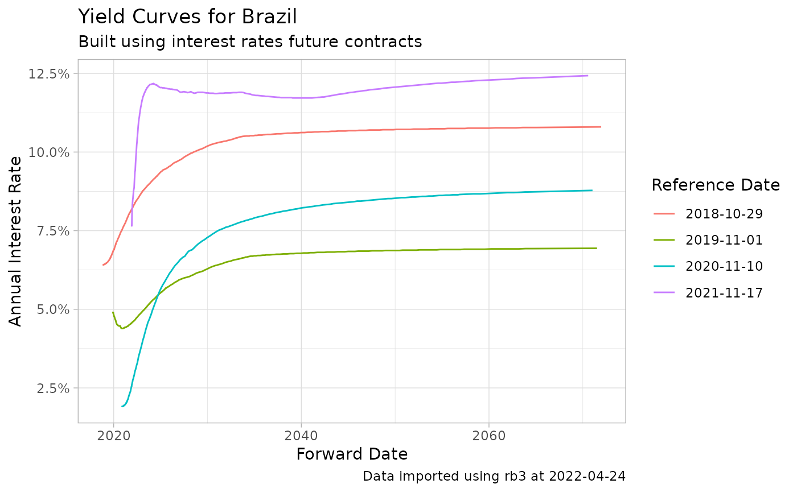

Fetching Historical Yield Curve from B3
Source:vignettes/Fetching-historical-yield-curve.Rmd
Fetching-historical-yield-curve.RmdData for the yield curve is available in B3’s website, section DI X Pre. The data is built using interest rate futures. See this pdf for more details.
library(rb3)
#> Loading required package: bizdays
#>
#> Attaching package: 'bizdays'
#> The following object is masked from 'package:stats':
#>
#> offset
library(ggplot2)
library(stringr)
df_yc <- yc_get(first_date = Sys.Date()-255*5,
last_date = Sys.Date(),
by = 255)
#> ⠙ Fetching data points 1/4 | ■■■■■■■■■ 25% | ETA: 24s
#> ⠸ Fetching data points 3/4 | ■■■■■■■■■■■■■■■■■■■■■■■ 75% | ETA: 8s
p <- ggplot(df_yc,
aes(x = forward_date,
y = r_252,
group = ref_date,
color = factor(ref_date)) )+
geom_line() +
labs(title = 'Yield Curves for Brazil',
subtitle = 'Built using interest rates future contracts',
caption = str_glue('Data imported using rb3 at {Sys.Date()}'),
x = 'Forward Date',
y = 'Annual Interest Rate',
color = "Reference Date") +
theme_light() +
scale_y_continuous(labels = scales::percent)
print(p)